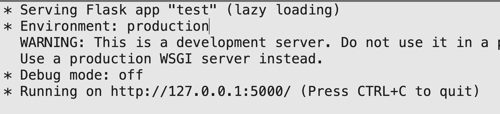
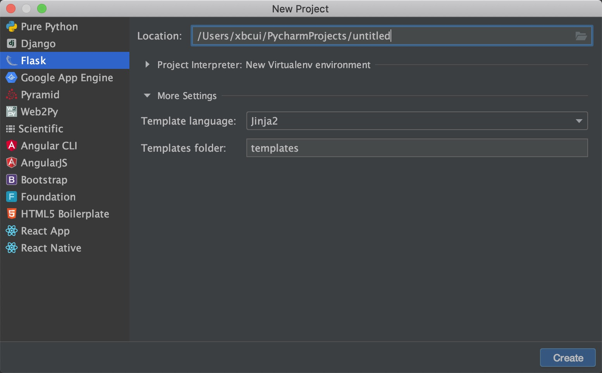

关于Flask
Flask 是一个使用 Python 编写的轻量级 Web 应用程序框架。可扩展性很好。Flask基于Werkzeug WSGI工具包和Jinja2模板引擎。
Flask使用
准备工作
- 安装 Python3
- 安装Sublime（提前配好Python开发环境）或者PyCharm
安装flask
pip install flask
使用Sublime创建Flask项目
创建falsk执行文件
- 创建test文件夹
- 在下面创建test.py文件
1 | from flask import Flask |
选择 Tools -> Build System 选定为Python3。
选择 Tools -> Build 运行代码。
看到如下图这个结果就说明执行成功，在浏览器访问其中的地址。接受来自Python的问候吧。

搭建falsk执行文件夹
- 创建一个test文件夹
- 在test文件夹下创建名为init的pyton文件。（注意前后各两个下划线）
- 在test文件夹下创建名为api的pyton文件。
创建完之后，文件结构如下：
1 | . |
init文件下的内容如下：
1 | from flask import Flask |
api文件下的内容如下：
1 | from test import app |
准备完毕之后，在api文件夹下运行代码（参照以上内容）。这是文件扩张成文件夹，照此可以完成小接口项目的搭建工作。
使用PyCharm创建Flask项目
这时候PyCharm的方便强大之处就体现出来了。使用PyCharm创建Flask项目，直接file -> new project 弹出如下图

点击创建即可。
主要文件结构如下
1 | . |
打开app.py文件，并执行。系统扩张类比上面Sublime的方法即可。
链接
个人博客刚搭建起来，尚未完善评价功能，有批评指教可以移步简书。
简书链接
写在最前面
这是我在简书上的第一篇博客，这次整理的技术点主要是关于Python的，但因为工作以来一直使用的开发语言是Java，所以在学习过程中会下意识的比较这两者。
在这里整理这些内容有两个原因：
1. 一是为了梳理一下最近的技术点；
2. 二来为了熟悉一下Markdown语法为以后自己的个人博客作准备。Python初体验
使用Python之前
工作的第一年就有同事分享给我一份资源，是他工作之余去培训Python的资料。但一直都没系统的学习完。直到今年公司有关于抓去数据的任务需求，我特意选择了Python作为新系统接口服务的技术栈之一。
关于Java和Python这两个语言的比较，对于一个程序猿的我来说没有好坏之分，`大锤八十小锤四十`而已。使用Python
今年上半年，公司有一个新的从合作伙伴公司数据抓取和数据修改等同步的需求。考虑了Java项目搭建的成本和Java在页面爬虫的短板等问题，选择了使用python作为项目的技术栈之一。初识Python之后
不得不说Python是一门强大的而且极易上手的开发语言，不论你是否有过编程的经验。
总结几个我觉得Java和Python的异同点。
- Python是动态语言（弱类型语言） / Java 是静态语言（强类型语言）
动态语言是在运行时确定数据类型的语言。变量使用之前不需要类型声明，通常变量的类型是被赋值的那个值的类型。 (eg: mumber = 1)
静态语言是在编译时变量的数据类型即可确定的语言，多数静态类型语言要求在使用变量之前必须声明数据类型。（eg: Int mumber = 1） - Python 和 Java 都是介于编译型和解释型语言之间的一门语言
使用过python开发有人会发现，python运行的时候会生成一个pyc文件。这说明python也不是一个纯的解释型语言。只不过类似Javac 这样的过程Python已经帮忙处理了，而且类似Java 跨平台的特性，class文件是需要虚拟机解释执行的，Python也是这样，但是有资料显示，2.生成的pyc文件在3.上是无法运行的。 - Python 没有基础数据类型的概念
python 常见数据类型有布尔型、整型、浮点型、字符串、列表、元组、集合、字典等 - Python 中没有NULL 替代的是None
- Python有丰富的第三方库
如果有一个成型的不错的构想，在实现的时候不妨先花时间找下已经封装好的第三方库，会带给你很大的惊喜。
链接
个人博客刚搭建起来，尚未完善评价功能，有批评指教可以移步简书。
简书链接